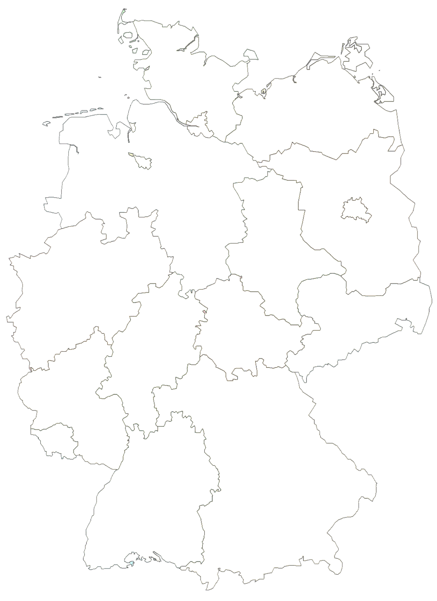

<DOCTYPE HTML>
  <html>
    <head>
      <title>CoronaZahlen</title>
      <link rel="stylesheet" href="../css/style.css">
      <link rel="stylesheet" href="../css/navigation.css">
    </head>
    <body>
      <!--Navigation----------------------------------------------------------------------------------------->
          <div class="Navigation">
            <a id="current">Home</a>
            <a href="../html/diagramme.html">Statistiken/Diagramme</a>
          </div>


<!--Map------------------------------------------------------------------------------------------------>
    <map class="map" name="bundeslaender" >

      <!--Bayern-->
      <area id="Bayern" shape="poly" coords="337, 908, 326, 829, 401, 790, 437, 756, 484, 800, 515, 787, 547, 799, 549, 766, 609, 783, 642, 832, 674, 859, 658, 883, 699, 942, 798, 1019, 798, 1064, 770, 1054, 755, 1098, 701, 1130, 714, 1180, 727, 1214, 704, 1202, 649, 1188, 591, 1210, 521, 1242, 466, 1208, 457, 1251, 390, 1209, 437, 1194, 426, 1081, 472, 1046, 461, 993, 437, 940, 407, 895, 378, 875, 342, 912, 342,912"
      href="diagramme.html"/>

      <!--Baden-Württemberg-->
      <area id="Baden-Württemberg" shape="poly" coords="251, 1002, 273, 951, 267, 905, 291, 905, 312, 936, 334, 918, 352, 902, 379, 880, 411, 906, 432, 918, 438, 963, 472, 1044, 450, 1044, 453, 1066, 421, 1085, 437, 1197, 383, 1205, 333, 1175, 342, 1192, 194, 1212, 176, 1187, 191, 1145, 207,1050"
      href="diagramme.html"/>

      <!--Sachsen-->
      <area id="Sachsen" shape="poly" coords="893, 710, 923, 638, 891, 594, 824, 610, 820, 627, 760, 622, 741, 626, 731, 587, 689, 586, 641, 600, 643, 672, 687, 703, 643, 717, 654, 738, 608, 773, 653, 813, 670, 785, 703, 775, 714, 783, 724, 768, 857, 701, 842, 685, 847, 676"
      href="diagramme.html"/>

      <!--Thüringen-->
      <area shape="poly" coords="685, 699, 646, 673, 644, 695, 566, 670, 556, 652, 563, 639, 553, 623, 521, 621, 510, 584, 487, 589, 492, 602, 469, 593, 416, 624, 445, 660, 411, 741, 430, 757, 497, 810, 508, 805, 497, 796, 508, 781, 547, 799, 545, 769, 561, 761, 571, 784, 613, 780, 614, 746, 633, 752, 652, 743, 640, 722"
      href="diagramme.html"/>

      <!--Hessen-->
      <area shape="poly" coords="383, 585, 385, 632, 396, 636, 404, 620, 413, 618, 441, 663, 445, 688, 430, 683, 417, 745, 427, 762, 407, 777, 391, 809, 374, 803, 377, 824, 361, 828, 327, 827, 337, 911, 308, 931, 292, 905, 270, 911, 266, 893, 275, 881, 245, 838, 220, 850, 206, 835, 236, 802, 222, 780, 222, 780, 225, 760, 238, 759, 236, 736, 241, 720, 255, 707, 265, 707, 277, 678, 299, 666, 300, 646, 281, 638, 296, 623, 317, 619, 320, 605, 331, 605, 341, 613, 368, 577"
      href="diagramme.html"/>

      <!--Rheinland-Pfalz-->
      <area shape="poly" coords="206, 694, 240, 741, 240, 760, 227, 759, 222, 779, 243, 805, 205, 829, 217, 848, 248, 841, 271, 885, 269, 910, 276, 953, 265, 959, 253, 1002, 158, 967, 167, 939, 152, 934, 156, 910, 130, 902, 68, 914, 80, 873, 51, 860, 36, 819, 62, 795, 102, 788, 106, 769, 190, 723"
      href="diagramme.html"/>

      <!--Saarland-->
      <area shape="poly" coords="67, 913, 90, 914, 129, 899, 153, 912, 154, 929, 160, 940, 169, 945, 158, 955, 165, 975, 135, 978, 129, 963, 113, 962, 112, 969, 102, 967, 79, 929, 63, 923"
      href="diagramme.html"/>

      <!--Nordrhein-Westfalen-->
      <area shape="poly" coords="21, 549, 43, 540, 70, 551, 104, 539, 110, 530, 93, 515, 129, 488, 186, 465, 184, 450, 197, 462, 225, 475, 218, 498, 228, 500, 215, 516, 223, 520, 261, 506, 277, 495, 269, 469, 256, 456, 283, 444, 301, 463, 337, 447, 329, 502, 372, 545, 364, 582, 341, 614, 329, 605, 319, 619, 279, 640, 298, 647, 296, 666, 277, 676, 262, 708, 241, 733, 208, 696, 94, 786, 66, 789, 61, 766, 48, 750, 26, 715, 35, 689, 20, 686, 42, 657, 33, 651, 50, 623"
      href="diagramme.html"/>

      <!--Sachsen-Anhalt-->
      <area shape="poly" coords="643, 690, 645, 671, 634, 634, 639, 614, 642, 603, 693, 588, 727, 583, 741, 571, 725, 559, 687, 526, 674, 535, 641, 495, 647, 485, 650, 444, 635, 446, 644, 393, 578, 360, 557, 384, 524, 377, 520, 389, 501, 391, 516, 426, 521, 519, 478, 523, 495, 588, 513, 588, 524, 622, 539, 613, 563, 640, 559, 651"
      href="diagramme.html"/>

      <!--Brandenburg-->
      <area shape="poly" coords="549, 345, 576, 342, 577, 330, 597, 324, 625, 304, 718, 344, 746, 321, 759, 325, 786, 299, 799, 275, 842, 295, 829, 324, 847, 322, 857, 308, 867, 323, 854, 344, 834, 376, 835, 393, 888, 433, 874, 464, 880, 480, 891, 487, 899, 514, 885, 552, 898, 579, 895, 597, 877, 593, 865, 605, 834, 602, 824, 616, 817, 631, 759, 619, 741, 627, 731, 587, 745, 575, 690, 530, 675, 531, 645, 507, 653, 446, 639, 449, 643, 399, 644, 393"
      href="diagramme.html"/>

      <!--Berlin-->
      <area shape="poly" coords="752, 421, 756, 427, 767, 420, 777, 436, 786, 445, 781, 452, 796, 458, 783, 471, 763, 462, 757, 468, 743, 459, 736, 467, 730, 460, 737, 454, 734, 444, 735, 433"
      href="diagramme.html"/>

      <!--Meck-Pomm-->
      <area shape="poly" coords="513, 202, 532, 188, 550, 202, 562, 206, 568, 198, 578, 170, 627, 161, 656, 137, 673, 108, 713, 122, 683, 126, 700, 133, 725, 121, 746, 80, 765, 76, 759, 88, 790, 96, 794, 103, 777, 118, 802, 135, 796, 143, 845, 214, 804, 218, 845, 232, 861, 313, 831, 322, 845, 294, 805, 290, 800, 278, 763, 324, 745, 322, 718, 342, 624, 302, 620, 320, 605, 328, 593, 319, 573, 345, 552, 343, 539, 337, 518, 306, 480, 302, 507, 267, 519, 252, 506, 241, 497, 222"
      href="diagramme.html"/>

      <!--Hamburg-->
      <area shape="poly" coords="396, 262, 400, 255, 408, 258, 444, 235, 443, 255, 447, 279, 459, 290, 440, 291, 425, 281, 417, 291, 398, 270, 432, 272"
      href="diagramme.html"/>

      <!--Niedersachsen-->
      <area shape="poly" coords="290, 212, 304, 217, 346, 217, 392, 269, 410, 287, 424, 290, 430, 282, 444, 294, 455, 288, 485, 304, 523, 307, 544, 339, 581, 364, 568, 373, 547, 388, 520, 378, 496, 391, 521, 433, 514, 452, 526, 469, 523, 484, 530, 492, 518, 510, 520, 517, 488, 522, 492, 545, 477, 558, 494, 582, 490, 600, 462, 594, 421, 622, 395, 626, 404, 633, 399, 637, 379, 628, 388, 618, 386, 598, 393, 590, 371, 579, 362, 567, 372, 545, 357, 548, 351, 527, 341, 530, 337, 503, 326,503,324,497, 333, 488, 322, 485, 324, 471, 337, 462, 334, 446, 314, 461, 295, 463, 292, 439, 275, 441, 255, 457, 271, 471, 276, 496, 265, 511, 253, 504, 236, 514, 224, 518, 216, 512, 230, 503, 228, 496, 217, 496, 221, 475, 219, 465, 201, 466, 187, 451, 182, 462, 164, 480, 132, 486, 129, 476, 135, 469, 126, 449, 119, 453, 98, 451, 94, 431, 104, 431, 98, 423, 134, 423, 133, 393, 148, 364, 149, 307, 122, 306, 125, 284, 134, 277, 135, 258, 154, 245, 183, 250, 220, 241, 242,274,228,280,240,289,247,298,258, 283, 256, 274, 244, 270, 257, 260, 278, 273, 277, 260, 270, 252"
      href="diagramme.html" />

      <!--Schlweswig-Holstein-->
      <area shape="poly" coords="442, 236, 395, 260, 363, 225, 326, 210, 310, 189, 323, 186, 323, 173, 308, 154, 324, 140, 300, 146, 293, 150, 293, 134, 329, 111, 298, 122, 233, 79, 265, 22, 290, 48, 363, 56, 384, 42, 415, 61, 426, 102, 409, 111, 499, 140, 527, 105, 556, 127, 519, 175, 496, 185, 509, 200, 522, 209, 508, 207, 493, 220, 518, 251, 512, 268, 482, 305, 456, 290, 457, 275, 438, 265"
      href="diagramme.html" />

      <!--Bremen-->
      <area shape="poly" coords="277, 324, 290, 328, 294, 332, 314, 340, 319, 336, 323, 340, 325, 350, 321, 361, 312, 359, 302, 354, 294, 359, 284, 334"
      href="diagramme.html" />

    </map>

    

    <div class="daten"> Daten über X </div>

    <!--script-->

    <!--footer-->
    <div id="footer">
      Website made by <br>
      <a href="../html/index.html">Radion Judov</a>
      |
      <a href="../html/index.html">Cem Graf</a>
      |
      <a href="../html/index.html">Konstanze</a>
      |
      <a href="../html/index.html">Johann</a>
    </div>

  </body>
</html>
